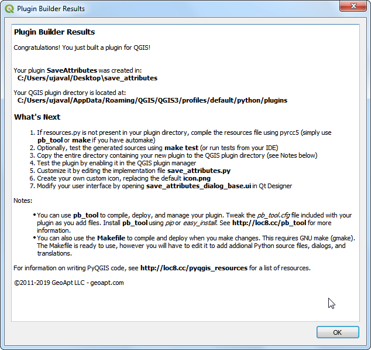
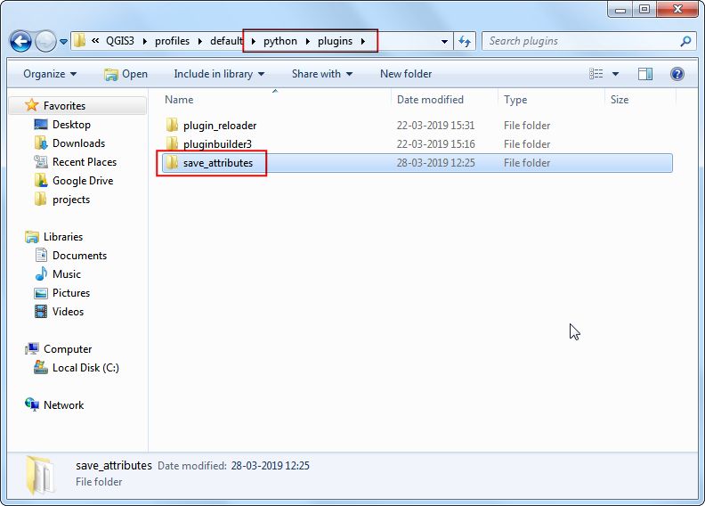

Determinarea Lungimii Liniilor și a Statisticilor (QGIS3)¶
QGIS dispune de funcții interne pentru calculul diverselor proprietăți geometrice ale unei entități - cum ar fi lungimea, zona, perimetrul etc. Acest tutorial vă arată cum să folosiți instrumentul de Adăugare a atributelor pentru o geometrie, în scopul introducerii, într-o nouă coloană, a unor valori care reprezintă lungimile entităților.
Privire de ansamblu asupra activității¶
Fiind dat un strat de tip polilinie, al căilor ferate nord-americane, vom încerca să determinăm lungimea totală a sistemului feroviar din Statele Unite.
Alte competențe pe care le veți dobândi¶
Folosirea expresiilor de filtrare a entităților.
Using the Statistics panel to compute and view statistics on columns.
Obținerea datelor¶
Natural Earth has a public domain railroads dataset.
Download the North America supplement zip file from the portal.
Pentru comoditate, puteți descărca o copie a datelor, făcând clic pe link-ul următor:
ne_10m_railroads_north_america..zip
Sursa de date [NATURALEARTH]
Procedure¶
Locate the downloaded
ne_10m_railroads_north_america.zipfile in the Browser panel and expand it. Drag thene_10m_railroads_north_america.shpfile to the canvas.

You will see a new layer
ne_10m_railroads_north_americaloaded in the Layers panel. You will see that the layer has lines representing railroads for all of North America. Now, let’s calculate the lengths of each line feature. Go to .

Search for and locate the algorithm. Double-click to launch it.

In the Add Geometry Attributes dialog, select
ne_10m_railroads_north_americaas the Input layer. The input layer’s Coordinate Reference System (CRS) is EPSG:4326 WGS84. This is a Geographic CRS with Latitude and Longitude as coordinates, WGS84 as ellipsoid and degrees as units. Because latitude and longitude don’t have a standard length, you can’t measure distances or areas accurately using planar geometry functions. Fortunately, QGIS provides a better way to compute distances using ellipsoidal geometry, which is the most accurate method for layers spanning large areas such as this. PickEllipsoidalas the Calculate using option. Click Run. Once the process finishes, click Close.

Notă
If your input layer is in a Projected CRS, you may choose Layer CRS option for calculation. Local or Regional projected coordinate systems are designed to minimize distortions over their region of interest, so are more accurate for such computation.
You will see a new layer
Added geom infoloaded in the Layers panel. This is a copy of the input layer with a new column added for distance. Right-click theAdded geom infolayer and select Open Attribute Table.

Notă
The Add Geometry Attribute tool adds different set of attributes depending on whether the input layer is points, lines or polygons. See QGIS documentation for more details.
In the Attribute Table, you will see a new column called distance. This contains the length of each line feature in meters. Also note that the sov_a3 attribute which contains the country code for each feature. Close the Attribute Table window.

Now that we have lengths of individual railroad line segments, we can add them up to find the total length of railroads. But as the problem statement demands we need total railroad length in the United States, we must use only the segments contained within USA. We can use the country code value in the sov_a3 column to filter the layer. Right-click the
Added geom infolayer and select Filter.

In the Query Builder dialog, enter the following expression and click OK.
"sov_a3" = 'USA'
You will see a Filter icon appear next to the
Added geom infolayer in the Layers panel indicating that a filter is applied to the layer. You can also visually confirm that the layer now contains line segments only for United States. Now we are ready to calculate the sum. Click the Show statistical summary button on the Attributes Toolbar.

A new Statistics panel will open. Select
Added geom infolayer andlengthcolumn.

You will see various statistics displayed in the panel. The unit of the statistics is the same as the units of
lengthcolumn - meters. Let’s change the computation to use kilometers instead. Click the Expression icon next to the fields drop-down menu in the Statistics panel.

Enter the following expression in the Expression Dialog that converts the length to kilometers.
length / 1000
The Sum value displayed is the total length of railroads in USA.

If you want to give feedback or share your experience with this tutorial, please comment below. (requires GitHub account)